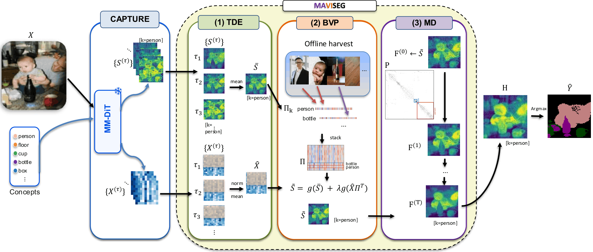
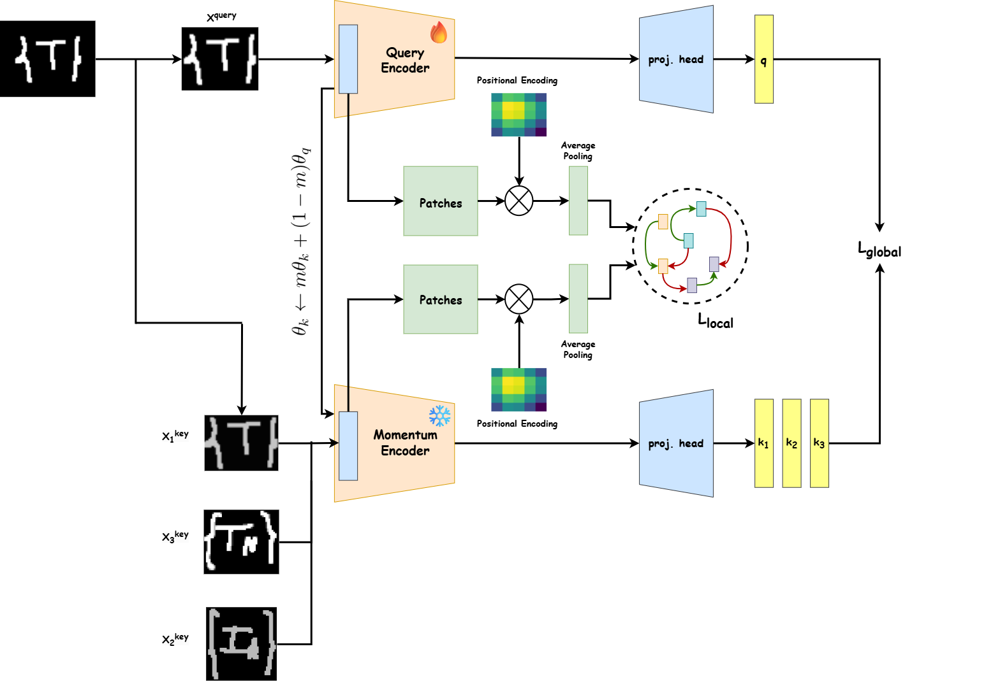

2026
Aug
Our latest work shows that a frozen text-to-image diffusion transformer already knows how to segment the scenes it generates, with no extra training, giving zero-shot open-vocabulary segmentation. Check out MaViSeg! This came out of a wonderful collaboration with the team at UNC Charlotte, supervised by Depeng Xu.
Jul
After a year-long wait, our paper MoCoMERV2 is accepted IJDAR! This marks my first journal article, with Prof Nibaran Das and team.
Jun
Andha-Dhun, the first ever work on Hindi Audio Descriptions, is accepted at NCVPRIPG 2026! This comes after a year of making movies accessible for Indian Blind and Low Vision audiences, during my thesis research with Makarand and Jio Platforms Ltd.
May
Our latest work shows that vision-language models struggle to keep track of which words belong to which objects once you switch languages. You can read the paper here.
2025
Nov
Our paper “Do We Need Large VLMs for Spotting Soccer Actions?” accepted to the IJCNLP-AACL 2025 Student Research Workshop as an oral! Part of my minor thesis @ Manipal University Jaipur. Thank you Avijit and Prof. Sandeep Chaurasia!
Oct
Started as a research intern at the University of Manchester with Prof. Angelo Cangelosi! Hoping to find ways as to how vision models can "see" better.


Oral
Oral
Oral
Oral

ICML Workshop 2025
TruthLens: Training-Free Data Verification for Deepfake Images via VQA-Style Probing
Research Intern · University of Manchester
Oct 2025 — nowwith Prof. Angelo Cangelosi
In-context mechanistic binding for vision-language models: multilingual concept binding and spatial grounding through a causal lens.
Research Intern · ISI Kolkata & Salford
Dec 2023 — nowwith Prof. Umapada Pal & Prof. Shivakumara Palaiahnakote
Scene text and handwriting recognition, efficient guided segmentation, and cross-dataset object detection benchmarks — leading to oral papers at ICDAR and ACPR 2025.
Undergraduate Research Assistant · IIIT Hyderabad
May 2025 — May 2026with Dr. Makarand Tapaswi · Katha-AI
Audio description for Hindi film with the Reliance AI Speech team; introduced ANDHA-DHUN and studied AD translation through Skopos theory.
Resident Researcher · Lossfunk, Bangalore
Jul — Aug 2025with Paras Chopra · Project Bitvision
Benchmarked 10+ open-source VLMs on QR-code understanding and built CAMBench-QR, a structure-aware benchmark for post-hoc explanations.
Research Fellow · IIIT Hyderabad (CVIT)
May — Jul 2024with Dr. C. V. Jawahar
Scene text recognition for Indic languages; built a batch-wise augmentation pipeline that cut image pre-processing time substantially.
Research Intern · Purdue University
Jan — May 2024with Prof. Vaneet Aggarwal
Reproduced and extended POSNEGDM, a trajectory-based RL model for sepsis treatment, adding Grad-CAM explanations to improve clinical trust.
Undergraduate Research Assistant · Manipal University Jaipur
May 2023 — Oct 2024with Dr. Sandeep Chaurasia
Built MANN-MITRA, a multimodal depression-detection framework, and a cyberbullying-assessment tool adopted by MUJ counseling.
Service. Reviewer for IEEE TIP (2025) and PAKDD 2026. Founder of VLR MUJ, Research Head at ACM SIGAI MUJ.
© Ritabrata Chakraborty · built with care